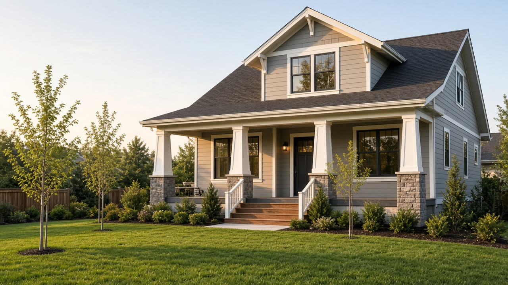
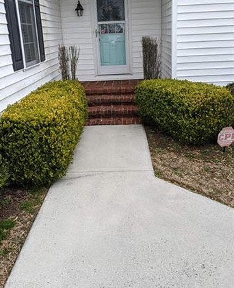

- Home
- Projects
Recent work
Recent remodeling projects.
Photos and before-and-afters from our work. Planning a project of your own? See remodeling, roofing, repairs, painting, and exterior cleaning.

Fireplace remodel
Before and after photos from this project.

Kitchen remodel
Before and after photos from this project.

Pressure washing
Before and after photos of a front walkway and a set of brick steps.

Door install
Before and after photos from this project.
No projects in this category yet. Check back soon.
Start your project
Planning something similar?
Quote requests go through Jobber, the software we use to manage our projects. Describe the job, upload a few photos, and your request comes straight to us.
You’ll be taken to our request form on Jobber.
- 01
Choose your project type
Remodeling, roofing, repairs or painting.
- 02
Tell us what you need
A few quick questions based on your project.
- 03
Upload photos and submit
Photos help us understand the job before we talk.